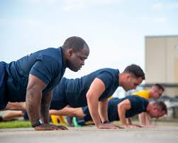

Overview
Maintaining peak physical readiness is not optional in the military — it is a non-negotiable standard woven into the fabric of officer development. For Midshipmen in the Naval Reserve Officers' Training Corps (NROTC) at the University of Hawaiʻi at Mānoa, this means regularly preparing for and executing the Physical Readiness Test (PRT). Yet despite the high stakes, most midshipmen track their fitness progress through informal spreadsheets, handwritten notes, or simple memory. Alpha Fit changes that.
The Problem
The Navy PRT consists of three scored events — push-ups, a timed plank hold, and a 1.5-mile run evaluated against age and gender standards. Scores directly influence a Midshipman's academic standing, scholarship eligibility, and ultimately their ability to commission as a Naval or Marine Corps officer.
The problem is not a lack of motivation among Midshipmen. It's a lack of the right tools. There is no centralized system where a midshipman can log a mock PRT result, immediately see where that score falls relative to the "Outstanding," "Excellent," "Good," or "Satisfactory" standards, and understand why they are struggling, let alone what to do about it. The current approach is disjointed and reactive. Alpha Fit is designed to fix that.
The Solution
Alpha Fit is a centralized web application built specifically for the UH Mānoa NROTC community using Next.js, React, Bootstrap 5, and hosted on GitHub. It provides a streamlined, mobile accessible platform where midshipmen can take ownership of their fitness journey in a structured, data driven way.
The "special sauce" of Alpha Fit is its deeply personalized user experience. When a Midshipman logs in, they access a custom dashboard displaying their historical PRT data across all three events, visualizing their score trajectory and situating their current status within official Navy readiness categories. Most powerfully, Alpha Fit's Alpha Coach feature uses AI to analyze the user's weakest event and generate a fully customized weekly training plan with specific exercises, sets, reps, and pacing targeting that exact deficiency. No two users see the same workout plan, because no two midshipmen have the same weaknesses.
Beyond the individual, Alpha Fit offers a Command View for unit leadership, enabling squad leaders and commanding officers to monitor aggregate readiness across the battalion without compromising individual privacy. This transforms a chaotic, spreadsheet driven process into a real time situational picture of the unit's physical health.
Mockup Page Ideas
Landing Page
A bold, military inspired public entry point with a motivating tagline and a clear login/registration call-to-action. New users register with their UH email and self-identify as a midshipman or cadre member.
Midshipman Dashboard
Features a readiness category badge (e.g., a green "EXCELLENT" label), a line chart plotting PRT scores over time, a countdown to the next official PRT date, and a motivational alert if a plateau or decline is detected.
Score Input Form
A clean, mobile optimized form for logging PRT results. Fields include date, push-up reps, plank hold time, run time, and optional notes. Upon submission, the app instantly calculates the user's readiness category.
Alpha Coach
Alpha Fit's signature feature. The AI identifies the user's weakest event and generates a structured, week by week training plan. For example, if the run is lacking, the plan might include interval sprints and heat-specific pacing tips for Honolulu.
Command View (Admin/Cadre Role)
A role-gated page for verified cadre members showing aggregate charts of unit readiness by tier, event-specific breakdowns, and a filterable roster by platoon or squad with individual scores anonymized by default to protect privacy.
Use Case Ideas
New Score Logging
It's 0630 on a Friday and the unit just finished a mock PRT on the UH Mānoa track. A midshipman opens Alpha Fit on their phone and logs their results. The app immediately shows them they've moved from "Good" to "Excellent" on push-ups, but their run is still holding them in "Satisfactory" overall. In 90 seconds, they have a complete picture of where they stand — no spreadsheet required.
Targeted Training via Alpha Coach
A sophomore midshipman stuck in the "Good" category for three consecutive cycles opens Alpha Coach. It detects the plateau in their run time and generates a 6-week improvement plan: interval sessions, a weekly long run, and a tempo run, with mileage increases capped to prevent injury. Two PRT cycles later, they post a personal best.
Unit Assessment by Leadership
The NROTC Executive Officer is preparing for the official PRT two weeks out. She logs into Command View and sees that 40% of the unit is below "Good" on push-ups. She uses this data to schedule targeted PT sessions addressing that specific gap rather than running a generic full-body workout that doesn't move the needle.
Onboarding a New Midshipman
A first-year MS-1 new to NROTC registers on Alpha Fit, enters their age and gender, and is immediately shown the score thresholds that apply to them. Before logging a single score, the standards are already concrete and personalized — making commissioning requirements feel achievable rather than abstract.
Beyond the Basics
To elevate Alpha Fit beyond the core requirements, future iterations could include:
SMS/Email Notifications
Automated reminders to log weekly workouts, with alerts when an official PRT window is approaching. Cadre members could receive a weekly summary digest showing unit logging activity.
Squad Leaderboards
An opt-in competitive element ranking midshipmen or squads based on PRT improvement rather than raw scores, keeping the focus on progress and fostering the kind of camaraderie driven motivation central to military culture.
PRT Predictor
Using a midshipman's historical rate of improvement, Alpha Fit projects what score they are on track to achieve at the next official PRT and tells them exactly how much they need to improve each week to hit a target category.
Google Calendar Integration
Automatically sync Alpha Coach workout plans to the user's calendar, making it easy to block training time alongside classes, labs, and NROTC obligations.